Contents
23.7.10. 附1.Vue前端项目¶
1. 搭建开发环境¶
Vue.js官网：https://cn.vuejs.org/
Vue.js教程：http://www.runoob.com/vue2/vue-tutorial.html
Vue-router教程：https://router.vuejs.org/zh/
Vuex教程：https://vuex.vuejs.org/zh/guide/
Element教程: http://element-cn.eleme.io/#/zh-CN
1.1 安装webpack¶
安装好 npm 之后，就可以通过 npm 命令来下载各种工具了。
安装打包工具 webpack，-g 表示全局安装。
npm install webpack -g
更多webpack教程可以参考以下资料
1.2 安装vue-cli¶
新版本的脚手架包名称由vue-cli改成了@vue/cli。
如果已经全局安装了旧版本的vue-cli（1.x或2.x),
需要先通过如下命令进行卸载
$ npm uninstall vue-cli -g
#或
$ yarn global remove vue-cli
Vue CLI需要安装Node.js 8.9或更高版本（推荐8.11.0+）。
安装node
$ node -v
v16.14.0
可以使用下列其中一个命令来安装脚手架：
$ npm install -g @vue/cli
或者
$ yarn global add @vue/cli
这里使用npm install -g @vue/cli命令来安装。在窗口中输入命令，并按下回车键，即可进行安装。
环境搭建简易流程
#1、安装node （node -v查询版本号）
node 安装
#2、安装淘宝镜像
npm install -g cnpm --registry=https://registry.npm.taobao.org
#3、安装 webpack，以全局的方式安装
npm install webpack -g
#4、全局安装vue以及脚手架vue-cli
npm install @vue/cli -g --unsafe-perm
#5、创建vue项目 mall-manage-system是你起的项目名称
vue create mall-manage-system
#6、运行当前项目 这个整个项目就搭建好了
npm run serve
1.3 淘宝镜像¶
因为 npm 使用的是国外中央仓库，有时候下载速度比较“喜人”，就像 Maven 有国内镜像一样，npm 在国内也有镜像可用。这里建议使用淘宝镜像。
安装淘宝镜像，安装成功后 用 cnpm 替代 npm 命令即可，如： cnpm install webpack -g 。
# 先切换为淘宝镜像，cnpm命令
$ npm install -g cnpm --registry=https://registry.npm.taobao.org
$ cnpm install -g @vue/cli
1.4 安装yarn¶
Yarn 是 Facebook 发布的 node.js 包管理器，它比 npm 更快、更高效，可以使用 Yarn 替代 npm 。
如果你安装了node，就安装了npm，可以使用下面的命令来安装：
npm i yarn -g --verbose
npm官方源访问速度实在不敢恭维，建议使用之前切换为淘宝镜像，在yarn安装完毕之后执行如下指令：
yarn config set registry https://registry.npm.taobao.org
到此为止我们就可以在项目中像使用npm一样使用yarn了。
使用 Yarn 跟 npm 差别不大，具体命令关系如下：
npm install => yarn install
npm install --save [package] => yarn add [package]
npm install --save-dev [package] => yarn add [package] --dev
npm install --global [package] => yarn global add [package]
npm uninstall --save [package] => yarn remove [package]
npm uninstall --save-dev [package] => yarn remove [package]
Yarn创建vite错误
https://blog.csdn.net/sgrrmswtvt/article/details/122942406
npm/yarn修改全局安装路径和缓存路径
1.5 创建项目¶
1. 可视化创建¶
# 安装淘宝npm
npm install -g cnpm --registry=https://registry.npm.taobao.org
# vue-cli 安装依赖包
cnpm install --g vue-cli
打开图形化，命令行输入：
vue ui
详细步骤参考
2. 命令行脚手架创建¶
我们通过 vue-cli 来生成一个项目，名称为 kitty-ui。
vue init webpack kitty-ui
一路根据提示输入项目信息，等待项目生成。
进入到项目根目录，执行 yarn install (也可以用 npm install，或淘宝 cnpm install，我们这里用 yarn 会快一点) 安装依赖包。
cd kitty -ui
yarn install
3.vue3 + vite¶
yarn create vite xixi-ops-frontend --template vue
cd xixi-ops-frontend
yarn
yarn dev
1.6 导入项目¶
打开webstorm，导入我们的项目。
2.vue3+vite+element-plus创建后台管理系统¶
2.1 自定义配置¶
1、配置启动端口和自动打开浏览器，新增配置文件修改 vue.config.js：
const { defineConfig } = require('@vue/cli-service')
module.exports = defineConfig({
transpileDependencies: true,
devServer: {
port: 10000,
open: true
}
})
修改eslintrc.js文件
我们并不想要格式化成这样的格式，而是希望eslint能够忽略这种语法规范，如何解决呢？只需要修改一下eslint语法规则即可。
module.exports = {
root: true,
env: {
node: true
},
extends: [
'plugin:vue/vue3-essential'
// '@vue/standard'
],
parserOptions: {
parser: '@babel/eslint-parser'
},
rules: {
'no-console': process.env.NODE_ENV === 'production' ? 'warn' : 'off',
'no-debugger': process.env.NODE_ENV === 'production' ? 'warn' : 'off',
// 关闭驼峰命名规则
'vue/multi-word-component-names': 0,
// 去掉函数()前面的空格
'space-before-function-paren': 'off'
}
}
2.2 安装插件¶
vue-cli-plugin-element-plus插件，选择导入方式为按需导入
参考文献
2.3 安装依赖¶
安装相应的依赖如下：
yarn add element-plus --save // element-plus是UI框架
yarn add @element-plus/icons-vue --save //element-plus/icons-vue是UI框架的图标相关的支撑库
yarn add axios --save // axios是HTTP请求库
yarn add sass --save // sass是用于编写样式的CSS超集语言
yarn add vue-router@next --save // vue-router用于实现单页面路由
yarn add vuex@next --save // vuex用于实现状态存储
或者
yarn add pinia --save // pinia 是一款新的vue3的状态管理库，完整的typescript支持。
yarn add particles.vue3 --save // 粒子背景插件
Vue 动态粒子特效(vue-particles)
https://juejin.cn/post/6844903937502347278
https://blog.csdn.net/qq_43353619/article/details/107078318
github地址： https://github.com/creotip/vue-particles
可选依赖如下
less-loader
less
sass-loader
node-sass
url-loader
file-loader
font-awesome // Font Awesome 提供了675个可缩放的矢量图标
axios
安装 axios 插件：
npm install axios -S
// 或者
yarn add axios
手动安装Element UI¶
安装依赖
Element 是国内饿了么公司提供的一套开源前端框架，简洁优雅，提供了 vue、react、angular 等多个版本，我们这里使用 vue 版本来搭建我们的界面。
访问：http://element-cn.eleme.io/#/zh-CN/component/installation ，官方指南，包含框架的安装，组件的使用等的全方位的教程。
选择一个你喜欢的包管理器
# NPM
$ npm install element-plus --save
# Yarn
$ yarn add element-plus
# pnpm
$ pnpm install element-plus
安装 babel-plugin-component 插件，按需加载，已达到减小项目体积的目的。
npm install babel-plugin-component -D
// or
yarn add babel-plugin-component
项目导入
按照安装指南，在 main.js 中引入 element，引入之后，main.js 内容如下：
1.完全导入¶
在项目目录下运行命令：
npm install element-plus --save
在 main.js 中写入以下内容：(全局配置)
import { createApp } from 'vue'
import App from './App.vue'
import router from './router'
import store from './store'
import ElementUI from 'element-plus'
import 'element-plus/theme-chalk/index.css'
createApp(App).use(store).use(router).use(ElementUI).mount('#app')
项目引入之后，我们在原有的 HelloWorld.vue 页面中加入一个 element 的按钮，测试一下。
<template>
<div class="hello">
<h1>{{ msg }}</h1>
<el-row>
<el-button>默认按钮</el-button>
<el-button type="primary">主要按钮</el-button>
<el-button type="success">成功按钮</el-button>
</el-row>
</div>
</template>
2.按需导入¶
首先你需要安装unplugin-vue-components 和
unplugin-auto-import这两款插件
npm install -D unplugin-vue-components unplugin-auto-import
然后把下列代码插入到你的 Vite 配置文件中
Vite
import { defineConfig } from 'vite'
import vue from '@vitejs/plugin-vue'
import AutoImport from 'unplugin-auto-import/vite'
import Components from 'unplugin-vue-components/vite'
import { ElementPlusResolver } from 'unplugin-vue-components/resolvers'
// https://vitejs.dev/config/
export default defineConfig({
plugins: [
vue(),
AutoImport({
resolvers: [ElementPlusResolver()],
}),
Components({
resolvers: [ElementPlusResolver()],
}),
]
})
参考文献
Vue3中element-plus全局使用Icon图标
vue3 中使用el-dropdown时，slot报错
slot attributes are deprecated
网站快速成型工具-Element UI
2.4 清理不需要的代码¶
清理 src/App.vue
<template>
<div id="app">
项目根组件
</div>
</template>
<script>
export default {}
</script>
<style>
</style>
清空路由 src/router/index.js：
import { createRouter, createWebHistory } from 'vue-router'
const routes = [
]
const router = createRouter({
history: createWebHistory(process.env.BASE_URL),
routes
})
export default router
清除模板目录和文件：
src/views
src/components/HelloWorld.vue
2.5 git版本管理¶
cd frontend
git init .
git add .
此时可能出现告警：
warning: LF will be replaced by CRLF in babel.config.js. The file will have its original line endings in your working directory
解决办法：
git config --global core.autocrlf false
# 再次添加
git add .
# 查看提交状态
git status
绿色则为正常提交，提交代码到本地主干并添加提交信息。
git commit -m "init project"
git status
可以看到代码都已经提交了。
2.6 gitee配置公钥¶
为本地电脑创建 SSH 码云的公钥和私钥。
ssh-keygen -t rsa -C "1879324764@qq.com"
默认一直 enter 就行。可以参考文档：
此时在 C:\Users\你电脑用户名\.ssh 的地方会生成三个文件：
$ ll /c/Users/18793/.ssh/
total 14
-rw-r--r-- 1 18793 197609 76 Jun 9 09:50 config
-rw-r--r-- 1 18793 197609 2602 Apr 21 14:56 id_rsa
-rw-r--r-- 1 18793 197609 571 Apr 21 14:56 id_rsa.pub
-rw-r--r-- 1 18793 197609 1238 Jun 28 14:59 known_hosts
-rw-r--r-- 1 18793 197609 584 Jun 23 17:20 known_hosts.old
其中 id_rsa.pub 的内容需要粘贴到码云中：
验证自己的密码添加成功。
2.7 gitee提交代码¶
在码云中创建同名的仓库，并将本地代码仓库推到码云仓库：
创建 git 仓库:
mkdir frontend
cd frontend
git init
touch README.md
git add README.md
git commit -m "first commit"
git remote add origin https://gitee.com/hujianli94net/frontend.git
git push -u origin "master"
已有仓库?
cd existing_git_repo
git remote add origin https://gitee.com/hujianli94net/frontend.git
git push -u origin "master"
仓库中也有了代码：
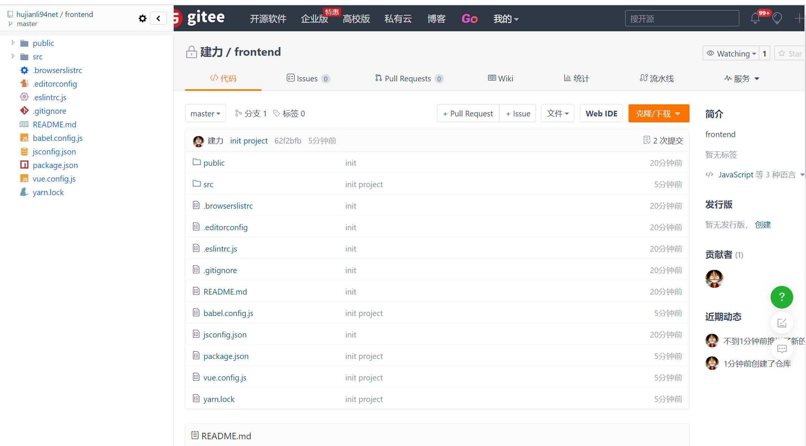2.8 git 分支管理¶
在开发新功能之前需要创建一个分支，专门用于开发：
git checkout -b login
可以创建分支和查看本地的分支：
git branch
* login
master
2.9 拉取远程分支到本地及本地切换分支¶
# 前本地及远程所有分支
git branch -a
# 切换一下远程分并在本地创建远程分支
git checkout -b 本地分支名 origin/远程分支名
# 本地分支切换
git checkout 分支名
# 代码记录
git log -n 3
# 本地合并其它分支代码
git status //查看代码状态
# 这里可以看到用执行了 git status 命令后 ，下面 On branch dev ,表示在 dev 分支上
确认之后合并如下：
git merge 合并分支名
# 本地代码提交到远程指定仓库
git pull
# 推送上远程指定仓库
git push origin 远程仓库名
3.Element Plus整体页面布局¶
一般后台页面的顶部导航栏和左侧导航栏一般是固定的，我们可以布局成下面的样式
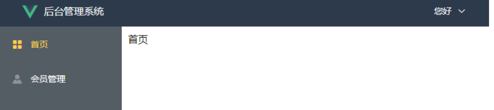3.1 整体项目布局¶
因为我们的首页是个公共的组件，点击首页，会员管理，都不会变，所以我们可以放在一个单独文件夹里面。
需要分别对头部，左侧区域，主区域拆分成不同的文件。
1 创建项目¶
创建一个全新的ElementUI 项目，请参考链接：
https://www.cnblogs.com/xiao987334176/p/14187889.html
在src目录下，创建views文件夹，在里面再创建Layout文件夹，最后创建index.vue
最终src目录结构如下：
./
├── App.vue
├── assets
│ └── logo.png
├── components
│ └── HelloWorld.vue
├── main.js
├── router
│ └── index.js
└── views
└── Layout
└── index.vue
修改views/Layout/index.vue，完整内容如下：
<template>
<div>
<app-header class="header"></app-header>
<app-navbar class="navbar"></app-navbar>
<app-main class="main"></app-main>
</div>
</template>
<script>
import AppHeader from '@/views/Layout/components/AppHeader'
import AppNavbar from '@/views/Layout/components/AppNavbar'
import AppMain from '@/views/Layout/components/AppMain'
// 导入子组件，缩写格式 AppHeader: AppHeader
export default {
components: { AppHeader, AppNavbar, AppMain }
}
</script>
<style scoped>
/* 头部样式 */
.header {
position: absolute;
line-height: 50px;
top: 0px;
left: 0px;
right: 0px;
background-color: #2d3a4b;
}
/* 左侧样式 */
.navbar {
position: absolute;
width: 200px;
top: 55px; /* 距离上面55像素 */
left: 0px;
bottom: 0px;
overflow-y: auto; /* 当内容过多时y轴出现滚动条 */
background-color: #545c64;
}
/* 主区域 */
.main {
position: absolute;
top: 50px;
left: 200px;
bottom: 0px;
right: 0px; /* 距离右边0像素 */
padding: 10px;
overflow-y: auto; /* 当内容过多时y轴出现滚动条 */
/* background-color: red; */
}
</style>
修改router/index.js
import { createRouter, createWebHistory } from 'vue-router'
// import HomeView from '@/components/HomeView'
import Layout from '@/views/Layout'
import Home from '@/views/Home'
import Member from '@/views/Member'
import Login from '@/views/Login'
import ServerList from '@/views/ServerList'
import Record from '@/views/Record'
import SoftwareImage from '@/views/SoftwareImage'
const routes = [
{
path: '/',
name: 'layout',
redirect: '/home',
component: Layout,
]
const router = createRouter({
history: createWebHistory(process.env.BASE_URL),
routes
})
export default router
修改App.vue，注释多余的代码
<template>
<div id="app">
<!-- <img src="./assets/logo.png">-->
<router-view/>
</div>
</template>
<script>
export default {
name: 'App'
}
</script>
<style>
/*#app {*/
/* font-family: 'Avenir', Helvetica, Arial, sans-serif;*/
/* -webkit-font-smoothing: antialiased;*/
/* -moz-osx-font-smoothing: grayscale;*/
/* text-align: center;*/
/* color: #2c3e50;*/
/* margin-top: 60px;*/
/*}*/
</style>
运行vue项目，访问首页，效果如下：
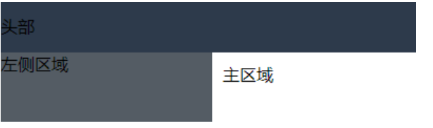2 布局拆分¶
上面已经实现了3个区域的布局，现在需要将3个区域拆分成不同的vue文件，方便后续的维护。
在src/views/Layout目录下，创建文件夹components，并在此文件夹创建3个文件AppHeader.vue，Appmain.vue，Appnavbar.vue
最终，src目录结构如下：
./
├── App.vue
├── assets
│ └── logo.png
├── components
│ └── HelloWorld.vue
├── main.js
├── router
│ └── index.js
└── views
└── Layout
├── components
│ ├── AppHeader.vue
│ ├── Appmain.vue
│ └── Appnavbar.vue
└── index.vue
views/Layout/components/AppHeader.vue
<template>
<div class="header">头部</div>
</template>
<script>
export default {
name: "AppHeader"
}
</script>
<style scoped>
</style>
views/Layout/components/Appmain.vue
<template>
<div class="main">主区域</div>
</template>
<script>
export default {
name: "AppMain"
}
</script>
<style scoped>
</style>
views/Layout/components/Appnavbar.vue
<template>
<div class="navbar">左侧区域</div>
</template>
<script>
export default {
name: "AppNavbar"
}
</script>
<style scoped>
</style>
views/Layout/index.vue
<template>
<div>
<app-header></app-header>
<app-navbar></app-navbar>
<app-main></app-main>
</div>
</template>
<script>
import AppHeader from "./components/AppHeader"
import AppNavbar from "./components/AppNavbar"
import AppMain from "./components/AppMain"
// 导入子组件，缩写格式 AppHeader: AppHeader
export default {
components: { AppHeader, AppNavbar, AppMain } // 有s
};
</script>
<style scoped>
/* 头部样式 */
.header {
position: absolute;
line-height: 50px;
top: 0px;
left: 0px;
right: 0px;
background-color: #2d3a4b;
}
/* 左侧样式 */
.navbar {
position: absolute;
width: 200px;
top: 50px; /* 距离上面50像素 */
left: 0px;
bottom: 0px;
overflow-y: auto; /* 当内容过多时y轴出现滚动条 */
background-color: #545c64;
}
/* 主区域 */
.main {
position: absolute;
top: 50px;
left: 200px;
bottom: 0px;
right: 0px; /* 距离右边0像素 */
padding: 10px;
overflow-y: auto; /* 当内容过多时y轴出现滚动条 */
/* background-color: red; */
}
</style>
刷新我们的页面，页面还是之前的样式，则我们的抽取没有问题
本文参考链接：
https://www.cnblogs.com/xiao987334176/p/14434383.html
参考文献
vue+element-ui搭建简易的后台管理系统页面布局
https://blog.csdn.net/weixin_41614732/article/details/105495539
vue+element 实现后台管理系统（登录+侧边菜单栏）
https://www.cnblogs.com/lyt0207/p/12730308.html
保姆级别的vue + ElementUI 搭建后台管理系统教程
4.ElementUI头部和左侧效果¶
现在我们就来使用ElementUI搭建头部组件，最终效果如下：
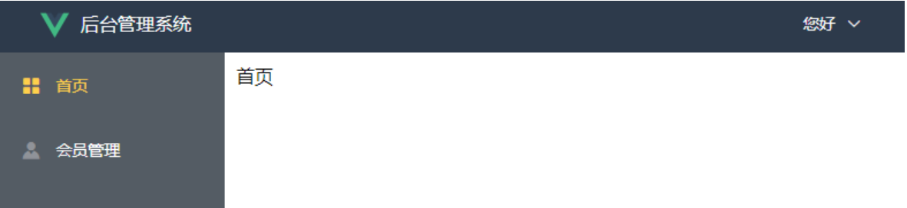4.1 头部组件¶
注意：项目代码参考上一篇的，修改
views/Layout/components/AppHeader.vue
<template>
<!-- logo和文字 -->
<div class="header">
<a href="/home"> <!-- 点击进入首页 -->
<img class="logo" :src="logoImg" width="30"/>
<span class="company">后台管理系统</span>
</a>
<!-- logo和文字结束 -->
<!-- 下拉菜单-->
<el-dropdown @command="handleCommand"><!-- 绑定指令,在methods里定义-->
<span class="el-dropdown-link">
<div class="r-content">
<el-dropdown trigger="click" szie="mini">
<span>
<img class="user" :src="userImg" >
</span>
</el-dropdown>
</div>
<i class="el-icon-arrow-down el-icon--right"></i>
</span>
<template v-slot:dropdown>
<el-dropdown-menu>
<!-- icon是修改图标 ，command是点击后传给方法的值-->
<el-dropdown-item icon="EditPen" command="edit">修改密码</el-dropdown-item>
<el-dropdown-item icon="Operation" @click="logout">退出登录</el-dropdown-item>
</el-dropdown-menu>
</template>
</el-dropdown>
<!-- 下拉菜单结束-->
</div>
</template>
<script>
export default {
name: 'AppHeader',
data () {
return {
username: 'hujianli',
logoImg: require('../../../assets/logo.png'),
userImg: require('../../../assets/images/user.png')
}
},
methods: {
handleCommand (command) {
this.$message(`点击了${command}`)
},
deletelocalStorage (name) {
localStorage.removeItem(name)
},
logout () {
// sessionStorage.removeItem("user")
// this.deleteCookie("token")
this.deletelocalStorage("token")
this.$router.push("/login")
// this.$api.logout().then((res) => {
// console.log(res)
// }).catch(function(res) {
// })
},
}
}
</script>
<style lang="less" scoped>
/* logo */
.logo {
vertical-align: middle; /* 居中 */
padding: 0px 10px 0px 40px; /* 上右下左 */
}
/* 文字 */
.company {
position: absolute;
color: white;
}
/* 下拉菜单 */
.el-dropdown {
float: right; /* 浮动在右边 */
margin-right: 40px; /* 靠右40px */
}
/* 系统管理 */
.el-dropdown-link {
color: white;
cursor: pointer; /* 鼠标放上去是手的形状 */
}
.r-content
{
.user
{
width: 40px;
height: 40px;
border-radius:50%;
}
}
/* 头部样式 */
.header {
position: absolute;
line-height: 50px;
top: 0px;
left: 0px;
right: 0px;
background-color: #2d3a4b;
}
</style>
刷新页面，效果如下：
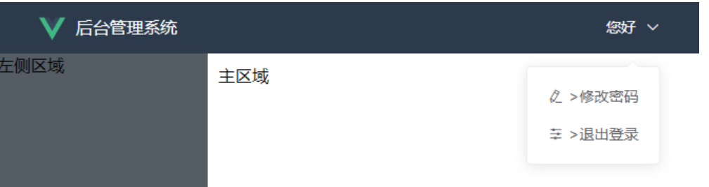4.2 左侧区域¶
修改 views/Layout/components/Appnavbar.vue
<template>
<!-- 使用element的导航菜单 -->
<div class="navbar">
<!--default-active默认选中的菜单，选中后颜色是 active-text-color -->
<!-- :router='true',true表示开启路由模式，开启之后，index值代表的就是路由地址-->
<!-- :router='true'开启之后点击就会跳转到对应的路由，默认为false -->
<!-- text-color 文字的颜色 -->
<el-menu :router='true' default-active="/home" class="el-menu-vertical-demo" background-color="#545c64"
text-color="#fff" active-text-color="#ffd04b">
<!-- 首页 class就是对应的icon -->
<el-menu-item index="/home">
<el-icon><Avatar /></el-icon>
<template v-slot:title>
<span>首页</span>
</template>
</el-menu-item>
<!-- VPN用户 index下的左右 / 别忘记-->
<el-menu-item index="/member/">
<el-icon><Key /></el-icon>
<template v-slot:title>
<span>VPN用户</span>
</template>
</el-menu-item>
<!-- GDC内部服务器管理 -->
<el-menu-item index="/server-list/">
<el-icon><Operation /></el-icon>
<template v-slot:title>
<span>GDC服务器列表</span>
</template>
</el-menu-item>
<!-- 运维事件记录 -->
<el-menu-item index="/record/">
<el-icon><Edit /></el-icon>
<template v-slot:title>
<span>运维事件记录</span>
</template>
</el-menu-item>
<!-- 常用软件镜像站 -->
<el-menu-item index="/softwareImage/">
<el-icon><Promotion /></el-icon>
<template v-slot:title>
<span>常用软件镜像站</span>
</template>
</el-menu-item>
<!-- <!– 员工管理 –>-->
<!-- <el-menu-item index="/staff/">-->
<!-- <i class="el-icon-user"></i>-->
<!-- <span slot="title">员工管理</span>-->
<!-- </el-menu-item>-->
</el-menu>
</div>
</template>
<script>
export default {
name: 'AppNavbar'
}
</script>
<style scoped>
/* 去掉右边框 */
.el-menu {
border-right: none;
}
/* 左侧样式 */
.navbar {
position: absolute;
width: 200px;
top: 55px; /* 距离上面50像素 */
left: 0px;
bottom: 0px;
overflow-y: auto; /* 当内容过多时y轴出现滚动条 */
background-color: #545c64;
}
</style>
4.3 主区域¶
修改views/Layout/components/AppMain.vue
<template>
<div class="main">
<!-- 组件的出口 -->
<router-view> </router-view>
</div>
</template>
<script>
export default {
name: 'AppMain'
}
</script>
<style scoped>
/* 主区域 */
.main {
position: absolute;
top: 50px;
left: 200px;
bottom: 0px;
right: 0px; /* 距离右边0像素 */
padding: 10px;
overflow-y: auto; /* 当内容过多时y轴出现滚动条 */
/* background-color: red; */
}
</style>
主界面文件
修改views/Layout/index.vue
<template>
<div>
<app-header/>
<app-main/>
<app-navbar/>
</div>
</template>
<script>
import AppHeader from '@/views/Layout/components/AppHeader'
import AppNavbar from '@/views/Layout/components/AppNavbar'
import AppMain from '@/views/Layout/components/AppMain'
// 导入子组件，缩写格式 AppHeader: AppHeader
export default {
components: { AppHeader, AppNavbar, AppMain }
}
</script>
<style scoped>
</style>
刷新页面，左边的菜单栏就出来了，效果如下：
这样左侧我们也做好了，但是点击左边的菜单会进入一个空白页面，因为我们开启了路由但是没有配置
4.3 其他组件¶
上面我们已经写好了左侧导航，并且点击能跳转到对应的路由，接下来我们来写对应的组件，我们把组件都放在src下的views下面。
分别是首页，会员管理。如果还有其他的，请根据实际情况修改。
在src/views目录下创建2个文件夹，分别是Home，Member。并在新目录下创建index.vue
最终src目录结构如下：
./
├── App.vue
├── assets
│ └── logo.png
├── components
│ └── HelloWorld.vue
├── main.js
├── router
│ └── index.js
└── views
├── Home
│ └── index.vue
├── Layout
│ ├── components
│ │ ├── AppHeader.vue
│ │ ├── Appmain.vue
│ │ └── Appnavbar.vue
│ └── index.vue
└── Member
└── index.vue
views/ Layout
修改 views/Home/index.vue
<template>
<div>
首页
</div>
</template>
<script>
export default {
name: "index"
}
</script>
<style scoped>
</style>
修改 views/Member/index.vue
<template>
<div>
会员管理
</div>
</template>
<script>
export default {
name: "index"
}
</script>
<style scoped>
</style>
4.4 首页路由配置¶
上面我们点击左侧的首页会跳转到空白页面，我们已经写好了首页，会员的组件（views下的）。我们期望的是当我们点击左侧对应的导航，对应的组件渲染在Layout的中间区域。
首页，会员的组件都是Layout的一个子组件，我们可以放在children下面，在 router/index.js 里配置首页的路由，代码如下
import Vue from 'vue'
import Router from 'vue-router'
import HelloWorld from '@/components/HelloWorld'
import Layout from '@/views/Layout' // 默认加载index.vue
import Home from '@/views/home'
import Member from '@/views/member'
Vue.use(Router)
export default new Router({
mode: 'history', //去掉url中的#
routes: [
{
path: '/',
name: 'layout', // 路由名称
redirect: '/home', // 当访问 / 时重定向到 home
component: Layout , // 组件对象
// 因为首页，会员都是 Layout 下的 main 里的，所以要将这些组件作为 Layout 组件的子组件，使用children，里面是一个数组，接收一个个对象
// meta 是
children: [
{
path: '/home',
component: Home,
meta: {title: '首页'}
}
]
},
]
})
修改 views/Layout/components/Appmain.vue，增加组件出口
<template>
<div class="main">
<router-view> </router-view> <!-- 组件的出口 -->
</div>
</template>
<script>
export default {
name: "AppMain"
}
</script>
<style scoped>
</style>
这样当我们点击首页的时候会把views/home/index.vue里的内容渲染到views/Layout/components/Appmain.vue
4.5 走通所有导航¶
上面我们已经写了个首页的导航，我们是在 Layout组件下写了个children，还有一种其他的方法，是和Layout组件同级
修改 router/index.js
import Vue from 'vue'
import Router from 'vue-router'
import HelloWorld from '@/components/HelloWorld'
import Layout from '@/views/Layout' // 默认加载index.vue
import Home from '@/views/home'
import Member from '@/views/member'
Vue.use(Router)
export default new Router({
mode: 'history', //去掉url中的#
routes: [
{
path: '/',
name: 'layout', // 路由名称
redirect: '/home', // 当访问 / 时重定向到 home
component: Layout , // 组件对象
// 因为首页，会员都是 Layout 下的 main 里的，所以要将这些组件作为 Layout 组件的子组件，使用children，里面是一个数组，接收一个个对象
// meta 是
children: [
{
path: '/home',
component: Home,
meta: {title: '首页'}
},
// {
// path: '/member',
// component: Member,
// meta: {title: '会员管理'}
// },
]
},
// 上面的是一种写法，可以放在children下面，还有一种方法是下面的这种
// 当访问 /member 时，渲染的是 Layout 组件，
{
path: '/member',
component: Layout,
children: [
{
path: '/', // 等价于 /member/,请求 /member 时会在后面拼接个 / 因为AppNavbar下的index.vue写的是/member/
component: Member,
meta: {title: '会员管理'}
}
]
},
]
})
这样当我们点击左侧导航栏的时候，右边都会加载对应的组件
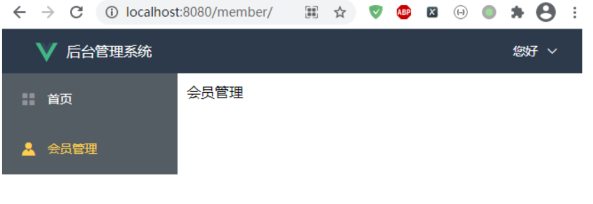4.6 使用Element Container布局容器¶
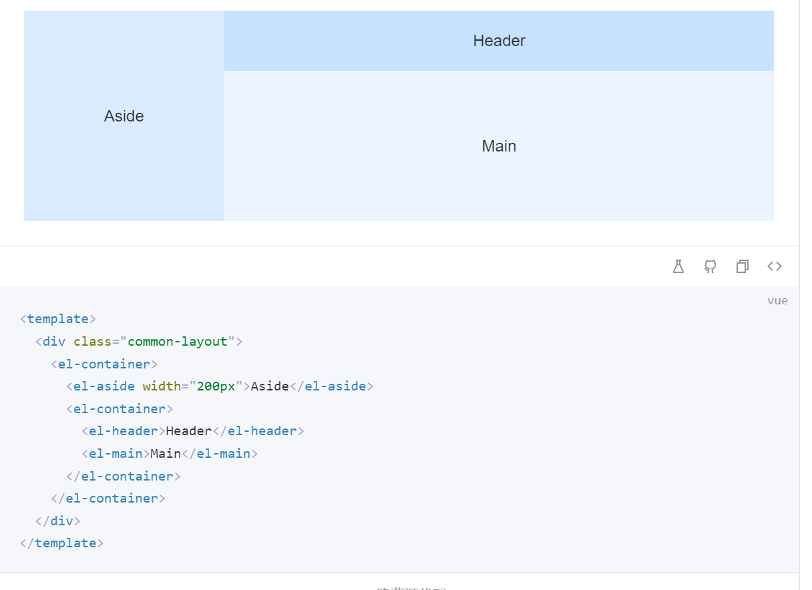目录结构
$ tree src/views/Layout/
src/views/Layout/
├── components
│ ├── CommonAside.vue
│ └── CommonHeader.vue
└── index.vue
index.vue
<template>
<div class="common-layout">
<el-container style="hight: 100%">
<el-aside width="auto">
<CommonAside/>
</el-aside>
<el-container>
<el-header>
<CommonHeader/>
</el-header>
<el-main>
<router-view></router-view>
</el-main>
</el-container>
</el-container>
</div>
</template>
<script>
import CommonAside from '@/views/Layout/components/CommonAside'
import CommonHeader from '@/views/Layout/components/CommonHeader'
// 导入子组件，缩写格式 CommonAside: CommonHeader
export default {
components:{ CommonTab, CommonAside,CommonHeader }
}
</script>
<style lang="less" scoped>
.el-header {
background-color: #333;
}
.el-main {
padding: 0;
}
</style>
components/CommonHeader.vue
<template>
<header>
<div class="l-content">
<el-button type="text" @click="handleMenu" title="侧边栏折叠/展开"><el-icon :size="25"><fold /></el-icon></el-button>
<!-- <el-button @click="handleMenu" plain icon="Menu" size="small"></el-button>-->
<!-- <h3 style="color: #fff">首页</h3> -->
<!-- separator：分隔符 -->
<!-- separator-class 图标分隔符 class-->
<!-- <el-breadcrumb separator="/">-->
<el-breadcrumb separator-class="el-icon-arrow-right">
<!--很明显 首页 一定是存在的 所以这里直接写死-->
<el-breadcrumb-item :to="{ path: '/' }">首页</el-breadcrumb-item>
<!--第二级菜单名称 就要看左侧组件有没有点击指定菜单，没有那就只显示首页 点击就显示当前菜单名称-->
<el-breadcrumb-item :to="current.path" v-if="current" >{{current.label}}</el-breadcrumb-item>
</el-breadcrumb>
</div>
<div class="r-content">
<el-dropdown size="mini" @command="handleCommand">
<span>
<img class="user" :src="userImg" />
</span>
<template v-slot:dropdown>
<el-dropdown-menu>
<el-dropdown-item icon="Avatar" command="PersonalCenter">个人中心</el-dropdown-item>
<el-dropdown-item icon="EditPen" command="edit">修改密码</el-dropdown-item>
<el-dropdown-item icon="Operation" @click="logout">退出</el-dropdown-item>
</el-dropdown-menu>
</template>
</el-dropdown>
</div>
</header>
</template>
<script>
import {mapState} from 'vuex'
export default {
name: "CommonHeader",
data() {
return {
userImg: require("../../../assets/images/user.png"),
};
},
methods:{
handleCommand(command){
this.$message(`点击了${command}`)
},
handleMenu() {
this.$store.commit('collapseMenu')
},
logout() {
this.$store.commit('clearToken') //清除token
this.$store.commit('clearMenu') //清除menu
this.$router.push("/login")
}
},
computed: {
// ...mapState({
// // 面包屑数据
// tags: state => state.tab.tabsList
// })
// 获取vuex数据的另一种写法
...mapState({
current: state => state.tab.currentMenu
})
}
};
</script>
<style lang="less" scoped>
header {
display: flex;
height: 100%;
justify-content: space-between;
align-items: center;
}
.l-content{
display: flex;
align-items: center;
.el-button {
margin-right: 20px;
}
}
.r-content {
.user{
width: 40px;
height: 40px;
border-radius: 50%;
}
}
.toggle-button {
background-color: #4a5064;
font-size: 10px;
line-height: 24px;
color: #fff;
text-align: center;
letter-spacing: 0.2em;
cursor: pointer;
}
</style>
components/CommonAside.vue
<template>
<el-menu
class="el-menu-vertical-demo"
:default-active="this.$route.path"
router
active-text-color="#ffd04b"
background-color="#545c64"
text-color="#fff"
:unique-opened = "true"
@open="handleOpen"
@close="handleClose"
:collapse="isCollapse"
>
<!-- logo和文字 -->
<div>
<a href="/home"> <!-- 点击进入首页 -->
<img class="logo" :src="logoImg" width="30"/>
<span class="company">{{ isCollapse ? "" : "熙熙运维平台" }}</span>
<!-- <h3>{{ isCollapse ? "熙熙运维" : "OSC-熙熙运维" }}</h3>-->
</a>
</div>
<el-menu-item @click="clickMenu(item)" v-for="item in noChildren" :index="item.path" :key="item.path">
<!-- <i :class="'el-icon-' + item.icon"></i> vue2图标方式 -->
<!-- 方式1-->
<!-- <component :is="item.icon" style="width: 16px;height: 16px;"></component>-->
<!-- 方式2-->
<el-icon><component :is="item.icon"/></el-icon>
<template v-slot:title>
<span>{{item.label}}</span>
</template>
</el-menu-item>
<el-sub-menu v-for="item in hasChildren" :index="item.path" :key="item.path">
<template v-slot:title>
<el-icon><component :is="item.icon"/></el-icon>
<span >{{ item.label }}</span>
</template>
<!-- 二级菜单 -->
<el-menu-item-group v-for="subItem in item.children" :key="subItem.path">
<el-menu-item @click="clickMenu(subItem)" :index="subItem.path">
<!-- <component :is="subItem.icon" style="width: 16px; height: 16px;"></component>-->
<el-icon><component :is="item.icon"/></el-icon>
{{subItem.label}}
</el-menu-item>
</el-menu-item-group>
</el-sub-menu>
<!-- <el-sub-menu index="1">-->
<!-- <template #title>-->
<!-- <el-icon><location /></el-icon>-->
<!-- <span>导航一</span>-->
<!-- </template>-->
<!-- <el-menu-item-group title="分组一">-->
<!-- <el-menu-item index="1-1">选项1</el-menu-item>-->
<!-- <el-menu-item index="1-2">选项2</el-menu-item>-->
<!-- </el-menu-item-group>-->
<!-- <el-menu-item-group title="分组二">-->
<!-- <el-menu-item index="1-3">选项3</el-menu-item>-->
<!-- </el-menu-item-group>-->
<!-- <el-sub-menu index="1-4">-->
<!-- <template #title>选项4</template>-->
<!-- <el-menu-item index="1-4-1">选项1</el-menu-item>-->
<!-- </el-sub-menu>-->
<!-- </el-sub-menu>-->
<!-- <el-menu-item index="2">-->
<!-- <el-icon><icon-menu /></el-icon>-->
<!-- <span>导航二</span>-->
<!-- </el-menu-item>-->
</el-menu>
</template>
<script>
export default {
data() {
return {
// isCollapse: false,
logoImg: require('../../../assets/gitee.png'),
menu: [
{
path: "/home",
name: "home",
label: "首页",
icon: "HomeFilled",
url: "/home",
},
{
path: "/vpnuser-list",
name: "VpnList",
label: "VPN用户管理",
icon: "Connection",
url: "/vpnuser-list",
},
{
path: "/server-list",
name: "ServerList",
label: "GDC服务器列表",
icon: "Grid",
url: "/server-list",
},
{
label: "其他",
icon: "Menu",
children: [
{
path: "/softwareImage",
name: 'record',
label: "常用软件镜像站",
icon: "Position",
url: "/softwareImage",
},
{
path: "/record",
name: 'softwareImage',
label: "运维事件记录",
icon: "Edit",
url: "/record",
},
],
},
],
};
},
methods: {
handleOpen(key, keyPath) {
console.log(key, keyPath);
},
handleClose(key, keyPath) {
console.log(key, keyPath);
},
clickMenu(item) {
console.log(item)
//调用vuex的selectMenu方法存储数据
this.$store.commit('selectMenu', item)
this.$router.push({name: item.name,});
},
},
computed: {
noChildren() {
//过滤出来没有子项目的数据
return this.menu.filter((item) => !item.children);
},
hasChildren() {
//过滤出来有子项目的数据
return this.menu.filter((item) => item.children);
},
isCollapse() {
return this.$store.state.tab.isCollapse;
},
}
}
</script>
<style lang="less" scoped>
/* logo */
.logo {
vertical-align: middle; /* 居中 */
padding: 0px 10px 0px 20px; /* 上右下左 */
}
/* 文字 */
.company {
position: absolute;
color: white;
}
.el-menu-vertical-demo:not(.el-menu--collapse) {
width: 200px;
min-height: 400px;
}
.el-menu {
height: 100vh;
border: none;
border-right: none;
h3 {
color: white;
text-align: center;
line-height: 48px;
}
}
</style>
最终实现效果如下：
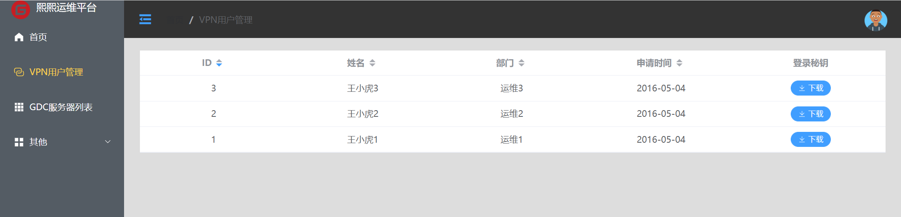4.7 附录-demo¶
vue3+ElementPlus后台管理搭建-基础布局+侧边栏
https://blog.csdn.net/citadel1/article/details/122455297
Vue + Element-ui实现后台管理系统(2)—项目搭建 + ⾸⻚布局实现
https://www.cnblogs.com/qdhxhz/p/12586292.html
参考文献
Vue–整体页面布局
https://www.cnblogs.com/zouzou-busy/p/13080665.html
https://juejin.cn/post/6844904070356942862
ElementUI 实现头部组件和左侧组件效果
https://www.cnblogs.com/xiao987334176/p/14434863.html
vue3 + elemenplus实现导航栏
5.登录页面¶
5.1 用户登录¶
登录页面是独立的，不需要加载Layout，怎么做到呢？
其实在路由上面，处理一下即可。
在views下面创建Login，并创建index.vue，此时src目录结构如下：
./
├── App.vue
├── assets
│ └── logo.png
├── components
│ └── HelloWorld.vue
├── main.js
├── router
│ └── index.js
└── views
├── Home
│ └── index.vue
├── Layout
│ ├── components
│ │ ├── AppHeader.vue
│ │ ├── Appmain.vue
│ │ └── Appnavbar.vue
│ └── index.vue
├── Login
│ └── index.vue
└── Member
└── index.vue
修改views/Login/index.vue
从 Element 指南中选择组件模板丰富登录界面，放置一个登录界面表单，包含账号密码输入框和登录重置按钮。
<template>
<div>
<!-- 在使用表单验证时，需要注意：
1.必须给表单对象绑定一个对象：:model="loginForm"，而且不能写成：v-model="loginForm"
2.所有的子控件的绑定对象必须是表单对象的内部对象，比如：v-model="loginForm.username"，否则总是验证失败
-->
<el-form class="login-container" :model="loginForm" ref="loginForm"
:rules="rules" label-position="left">
<h3 class="title">系统登录</h3>
<el-form-item prop="username">
<el-input type="text" v-model="loginForm.username" auto-complete="off" placeholder="用户名"></el-input>
</el-form-item>
<el-form-item prop="password">
<el-input type="password" v-model="loginForm.password" auto-complete="off" placeholder="密码"></el-input>
</el-form-item>
<el-checkbox class="login-remember" v-model="checked">记住密码</el-checkbox>
<el-form-item style="width:100%;">
<el-button type="primary" style="width:48%;" @click="reset">重 置</el-button>
<el-button type="primary" style="width:48%;" @click="login" :loading="logining">登 录</el-button>
</el-form-item>
</el-form>
</div>
</template>
稍微调整一下界面样式
<style lang="scss" scoped>
.login-container {
-webkit-border-radius: 5px;
border-radius: 5px;
-moz-border-radius: 5px;
background-clip: padding-box;
margin: 180px auto;
width: 350px;
padding: 35px 35px 15px 35px;
background: #fff;
border: 1px solid #eaeaea;
box-shadow: 0 0 25px #cac6c6;
.title {
margin: 0px auto 40px auto;
text-align: center;
color: #505458;
}
.remember {
margin: 0px 0px 35px 0px;
}
}
</style>
js部分
<script>
import Cookies from 'js-cookie'
export default {
name: 'Login',
data () {
return {
loginForm: {
username: 'admin',
password: '123456'
},
rules: {
username: [
{
required: true,
message: '请输入用户名',
trigger: 'blur'
},
{
min: 5,
max: 12,
message: '长度在 5 到 12 个字符',
trigger: 'blur'
}
],
password: [
{
required: true,
message: '请输入密码',
trigger: 'blur'
},
{
min: 6,
max: 15,
message: '长度在 6 到 15 个字符',
trigger: 'blur'
}
]
},
checked: true
}
},
methods: {
login () {
const userInfo = {
account: this.loginForm.account,
password: this.loginForm.password
}
this.$api.login(JSON.stringify(userInfo)).then((res) => {
Cookies.set('token', res.data.token) // 放置token到Cookie
sessionStorage.setItem('user', userInfo.account) // 保存用户到本地会话
this.$router.push('/') // 登录成功，跳转到主页
}).catch(function (res) {
alert(res)
})
},
submitClick (formName) {
// 表单验证
this.$refs[formName].validate(valid => {
if (valid) {
alert('提交成功！')
} else {
console.log('error submit！')
return false
}
})
},
reset () {
this.$refs.loginForm.resetFields()
}
}
}
</script>
修改 router/index.js增加登录路由
import Vue from 'vue'
import Router from 'vue-router'
import HelloWorld from '@/components/HelloWorld'
import Layout from '@/views/Layout' // 默认加载index.vue
import Home from '@/views/home'
import Member from '@/views/member'
import Login from '@/views/login'
Vue.use(Router)
export default new Router({
mode: 'history', //去掉url中的#
routes: [
{
path: '/login',
name: 'login', // 路由名称
component: Login // 组件对象
},
{
path: '/',
name: 'layout', // 路由名称
redirect: '/home', // 当访问 / 时重定向到 home
component: Layout , // 组件对象
// 因为首页，会员都是 Layout 下的 main 里的，所以要将这些组件作为 Layout 组件的子组件，使用children，里面是一个数组，接收一个个对象
// meta 是
children: [
{
path: '/home',
component: Home,
meta: {title: '首页'}
},
// {
// path: '/member',
// component: Member,
// meta: {title: '会员管理'}
// },
]
},
// 上面的是一种写法，可以放在children下面，还有一种方法是下面的这种
// 当访问 /member 时，渲染的是 Layout 组件，
{
path: '/member',
component: Layout,
children: [
{
path: '/', // 等价于 /member/,请求 /member 时会在后面拼接个 / 因为AppNavbar下的index.vue写的是/member/
component: Member,
meta: {title: '会员管理'}
}
]
},
]
})
访问登录url http://localhost:8080/login/
效果如下：
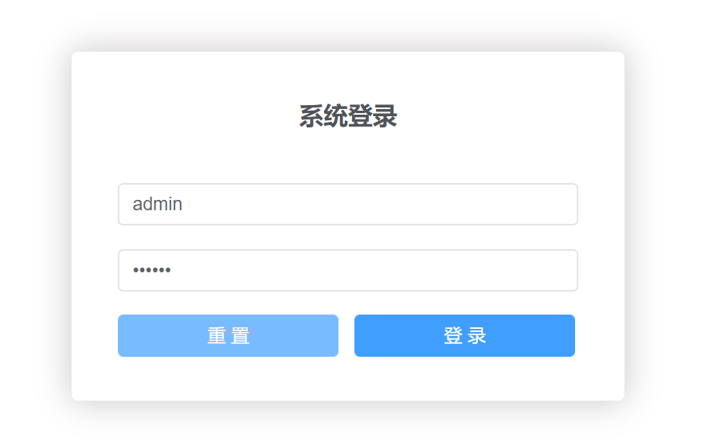5.2 vue滑块登录页面模板¶
https://zhushenxiu.site/2022/06/01/vue/login-page/
参考文献：
6. 定义错误页面路由¶
在views下面创建Common，新目录下创建401.vue、404.vue、500.vue
丰富一下 404 页面内容，加入 scss 样式，以404.vue举例
<template>
<div class="site-wrapper site-page--not-found">
<div class="site-content__wrapper">
<div class="site-content">
<h2 class="not-found-title">404</h2>
<p class="not-found-desc">抱歉！您访问的页面<em>失联</em>啦 ...</p>
<el-button @click="$router.go(-1)">返回上一页</el-button>
<el-button type="primary" class="not-found-btn-gohome" @click="$router.push('/')">进入首页</el-button>
</div>
</div>
</div>
</template>
<script>
export default {
name: '404'
}
</script>
<style lang="scss">
.site-wrapper.site-page--not-found {
position: absolute;
top: 60px;
right: 0;
bottom: 0;
left: 0;
overflow: hidden;
.site-content__wrapper {
padding: 0;
margin: 0;
background-color: #fff;
}
.site-content {
position: fixed;
top: 15%;
left: 50%;
z-index: 2;
padding: 30px;
text-align: center;
transform: translate(-50%, 0);
}
.not-found-title {
margin: 20px 0 15px;
font-size: 8em;
font-weight: 500;
color: rgb(55, 71, 79);
}
.not-found-desc {
margin: 0 0 30px;
font-size: 26px;
text-transform: uppercase;
color: rgb(118, 131, 143);
> em {
font-style: normal;
color: #ee8145;
}
}
.not-found-btn-gohome {
margin-left: 30px;
}
}
</style>
打开 router/index.js，添加404页面。
import { createRouter, createWebHistory } from 'vue-router'
// import HomeView from '@/components/HomeView'
import Layout from '@/views/Layout'
import Home from '@/views/Home'
import Member from '@/views/Member'
import Login from '@/views/Login'
import ServerList from '@/views/ServerList'
import Record from '@/views/Record'
import SoftwareImage from '@/views/SoftwareImage'
import NotFound404 from '@/views/Common/404'
const routes = [
.......
{
path: '/404',
name: 'notfound404',
component: NotFound404
},
.......
]
const router = createRouter({
history: createWebHistory(process.env.BASE_URL),
routes
})
export default router
访问：http://localhost:8080/#/404， 正确显示修改后的 404 页面效果。
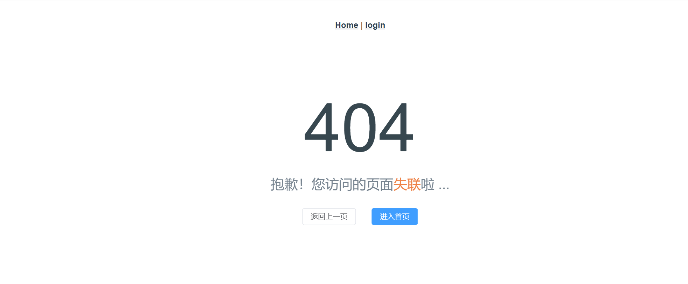7.安装 Mock.js¶
为了模拟后台接口提供页面需要的数据，我们引入 Mock.js 为我们提供模拟数据，而不用依赖于后台接口的完成。
1. 安装依赖¶
执行如下命令，安装依赖包。
yarn add mockjs --dev
安装完成之后，我们写个例子测试一下。
在 src 目录下新建一个 mock 目录，创建 index.js，在里面我们模拟了两个接口，分别拦截用户和菜单的请求，并返回相应的数据。
import Mock from 'mockjs'
Mock.mock('http://localhost:10000/user', {
name: '@name',
email: '@emaol',
'age|1-10': 5
})
Mock.mock('http://localhost:10000/menu', {
id: '@increment',
name: 'menu',
'order|10-20': 12
})
修改
src/views/Home/index.vue，在页面放置两个按钮，分别触发用户和菜单的处理请求，成功后弹出获取结果。
<template>
<div>首页</div>
<h2>Home Page</h2>
<el-button type="primary" @click="getUser">获取用户信息</el-button>
<el-button type="primary" @click="getMenu">获取菜单信息</el-button>
</template>
<script>
import axios from 'axios'
export default {
name: 'index',
components: {},
methods: {
getUser () {
axios.get('http://localhost:10000/user').then(function (res) {
alert(JSON.stringify(res.data))
}).catch(function (res) {
alert(res)
})
},
getMenu () {
axios.get('http://localhost:10000/menu').then(function (res) {
alert(JSON.stringify(res.data))
}).catch(function (res) {
alert(res)
})
}
}
}
</script>
<style scoped>
</style>
main.js
import { createApp } from 'vue'
import App from './App.vue'
import router from './router'
import store from './store'
import ElementUI from 'element-plus'
import 'element-plus/theme-chalk/index.css'
// 导入mock
import './mock/index'
createApp(App).use(store).use(router).use(ElementUI).mount('#app')
Mock 线上平台支持
FastMock： https://www.fastmock.site/
EasyMock：https://mock.mengxuegu.com/
8.vue拦截器qs¶
1. 什么是qs¶
qs是一个流行的查询参数序列化和解析库。
可以将一个普通的object序列化成一个查询字符串，或者反过来将一个查询字符串解析成一个object,帮助我们查询字符串解析和序列化字符串。
2. vue中qs安装使用¶
打开控制台输入：
npm install qs
// 或者
yarn add qs
在main.js中导入qs插件：
import qs from 'qs'
在main.js中配置全局属性：
const app = createApp(App)
app.config.globalProperties.$qs = qs
3. 方法¶
qs.parse()
qs.parse()是将URL解析成对象的形式
const str = "username='admin'&password='admin'"
console.log(qs.parse(str)) // Object { username: "admin", password: "admin" }
qs.stringify()
qs.stringify()是将对象 序列化成URL的形式，以&进行拼接
qs.stringify({username:'admin', password:'admin'})
//username=admin&password=admin
4. 参数处理¶
一般参数
await this.$axios({
method: 'post',
url: url,
data: this.$qs.stringify(params), // 将js对象转换成字符串格式
})
数组参数
注意：对于数组参数，不能使用一般参数的形式。
比如原参数
{"id":3,"title":"python 开发实战","price":"98.60","pub_date":"2020-05-05","publish":"中国青年出版社","authors":[2]}
传给后端接收时，会变成
{'id': ['3'], 'title': ['python 开发实战'], 'price': ['98.60'], 'pub_date': ['2020-05-05'], 'publish': ['中国青年出版社'], 'authors[0]': ['2']}
发现问题没有，后端接收authors时，变成了authors[0]，显然是不能接受的。
怎么解决呢？
await this.$axios({
method: 'post',
url: url,
data: this.$qs.stringify(params,{arrayFormat: 'repeat', allowDots: true})
})
说明：
arrayFormat 可以格式化数组参数，有3种形式，这里选择repeat就可以了。
allowDots 启用点表是法
例如：
let data = 'a.b=c';
qs.parse(data,{allowDots:true});//{a:{b:'c'}}
增加2个参数后，后端接收，就正常了，比如：
{'id': ['3'], 'title': ['python 开发实战'], 'price': ['98.60'], 'pub_date': ['2020-05-05'], 'publish': ['中国青年出版社'], 'authors': ['2']}
参考文献：
8.封装axios模块¶
1. 封装背景¶
使用axios发起一个请求是比较简单的事情，但是axios没有进行封装复用，项目越来越大，会引起越来越多的代码冗余，让代码变得越来越难维护。所以我们在这里先对 axios 进行二次封装，使项目中各个组件能够复用请求，让代码变得更容易维护。
2. 封装要点¶
统一 url 配置
统一 api 请求
request (请求) 拦截器，例如：带上token等，设置请求头
response (响应) 拦截器，例如：统一错误处理，页面重定向等
根据需要，结合 Vuex 做全局的 loading 动画，或者错误处理
将 axios 封装成 Vue 插件使用
3. 文件结构¶
在 src 目录下，新建一个 http 文件夹，用来存放 http交互 api 代码。
http/
moudules/
axios.js
config.js
index.js
api.js
config.js： axios 默认配置，包含基础路径等信息。
axios.js：二次封装 axios 模块，包含拦截器等信息。
api.js：请求接口汇总模块，聚合模块 API。
index.js：将 axios 封装成插件，按插件方式引入。
moudules: 子模块API
config.js
export default {
method: 'get',
// 基础url前缀
baseURL: 'http://localhost:8080/',
// 请求头信息
headers: {
'Content-Type': 'application/json;charset=UTF-8'
},
// 参数
data: {},
// 设置超时时间
timeout: 10000,
// 携带凭证
withCredentials: true,
// 返回数据类型
responseType: 'json'
}
axios.js
import axios from 'axios';
import config from './config';
import qs from 'qs';
import Cookies from "js-cookie";
import router from '@/router'
// 使用vuex做全局loading时使用
// import store from '@/store'
export default function $axios(options) {
return new Promise((resolve, reject) => {
const instance = axios.create({
baseURL: config.baseURL,
headers: {},
transformResponse: [function (data) {
}]
})
// request 拦截器
instance.interceptors.request.use(
config => {
let token = Cookies.get('token')
// 1. 请求开始的时候可以结合 vuex 开启全屏 loading 动画
// console.log(store.state.loading)
// console.log('准备发送请求...')
// 2. 带上token
if (token) {
config.headers.accessToken = token
} else {
// 重定向到登录页面
router.push('/login')
}
// 3. 根据请求方法，序列化传来的参数，根据后端需求是否序列化
if (config.method === 'post') {
if (config.data.__proto__ === FormData.prototype
|| config.url.endsWith('path')
|| config.url.endsWith('mark')
|| config.url.endsWith('patchs')
) {
} else {
config.data = qs.stringify(config.data)
}
}
return config
},
error => {
// 请求错误时
console.log('request:', error)
// 1. 判断请求超时
if (error.code === 'ECONNABORTED' && error.message.indexOf('timeout') !== -1) {
console.log('timeout请求超时')
// return service.request(originalRequest);// 再重复请求一次
}
// 2. 需要重定向到错误页面
const errorInfo = error.response
console.log(errorInfo)
if (errorInfo) {
error = errorInfo.data // 页面那边catch的时候就能拿到详细的错误信息,看最下边的Promise.reject
const errorStatus = errorInfo.status; // 404 403 500 ...
router.push({
path: `/error/${errorStatus}`
})
}
return Promise.reject(error) // 在调用的那边可以拿到(catch)你想返回的错误信息
}
)
// response 拦截器
instance.interceptors.response.use(
response => {
let data;
// IE9时response.data是undefined，因此需要使用response.request.responseText(Stringify后的字符串)
if (response.data == undefined) {
data = JSON.parse(response.request.responseText)
} else {
data = response.data
}
// 根据返回的code值来做不同的处理
switch (data.rc) {
case 1:
console.log(data.desc)
break;
case 0:
store.commit('changeState')
// console.log('登录成功')
default:
}
// 若不是正确的返回code，且已经登录，就抛出错误
// const err = new Error(data.desc)
// err.data = data
// err.response = response
// throw err
return data
},
err => {
if (err && err.response) {
switch (err.response.status) {
case 400:
err.message = '请求错误'
break
case 401:
err.message = '未授权，请登录'
break
case 403:
err.message = '拒绝访问'
break
case 404:
err.message = `请求地址出错: ${err.response.config.url}`
break
case 408:
err.message = '请求超时'
break
case 500:
err.message = '服务器内部错误'
break
case 501:
err.message = '服务未实现'
break
case 502:
err.message = '网关错误'
break
case 503:
err.message = '服务不可用'
break
case 504:
err.message = '网关超时'
break
case 505:
err.message = 'HTTP版本不受支持'
break
default:
}
}
console.error(err)
return Promise.reject(err) // 返回接口返回的错误信息
}
)
// 请求处理
instance(options).then(res => {
resolve(res)
return false
}).catch(error => {
reject(error)
})
})
}
api.js
/*
* 接口统一集成模块
*/
import { login } from './moudules/login'
import { user } from './moudules/user'
import { menu } from './moudules/menu'
// 默认全部导出
export default {
login,
user,
menu
}
index.js
// 导入所有接口
import apis from './api'
const install = Vue => {
if (install.installed)
return;
install.installed = true;
Object.defineProperties(Vue.config.globalProperties, {
// 注意，此处挂载在 Vue 原型的 $api 对象上
$api: {
get() {
return apis
}
}
})
}
export default install
moudules下面为子API模块
login.js
import axios from '../axios'
/*
* 系统登录模块
*/
// 登录
export const login = data => {
return axios({
url: 'login',
method: 'post',
data
})
}
// 登出
export const logout = () => {
return axios({
url: 'logout',
method: 'get'
})
}
其他的编写模式差不多。
10.封装 mock 模块¶
为了统一可以统一管理和集中控制数据模拟接口，我们对 mock 模块进行了封装，可以方便的定制模拟接口的统一开关和个体开关。
1.文件结构¶
在 mock 目录下新建一个 index.js ，创建 modules 目录并在里面创建三个模块 *.js 文件。
index.js：模拟接口模块聚合文件
login.js：登录相关的接口模拟
user.js：用户相关的接口模拟
menu.js：菜单相关的接口模拟
index.js
import Mock from 'mockjs'
import * as user from './modules/user'
import * as menu from './modules/menu'
import * as login from './modules/login'
// 设置全局延时
Mock.setup({
timeout: '300-600'
})
// 1. 开启/关闭[业务模块]拦截, 通过调用fnCreate方法[isOpen参数]设置.
// 2. 开启/关闭[业务模块中某个请求]拦截, 通过函数返回对象中的[isOpen属性]设置.
// fnCreate(login, true)
fnCreate(user, true)
fnCreate(menu, true)
fnCreate(login, true)
/**
* 创建mock模拟数据
* @param {*} mod 模块
* @param {*} isOpen 是否开启?
*/
function fnCreate (mod, isOpen = true) {
if (isOpen) {
for (const key in mod) {
((res) => {
if (res.isOpen !== false) {
Mock.mock(new RegExp(res.url), res.type, (opts) => {
opts.data = opts.body ? JSON.parse(opts.body) : null
delete opts.body
console.log('\n')
console.log('%cmock拦截, 请求: ', 'color:blue', opts)
console.log('%cmock拦截, 响应: ', 'color:blue', res.data)
return res.data
})
}
})(mod[key]() || {})
}
}
}
// Mock.mock('http://localhost:10000/user', {
// name: '@name',
// email: '@emaol',
// 'age|1-10': 5
// })
//
// Mock.mock('http://localhost:10000/menu', {
// id: '@increment',
// name: 'menu',
// 'order|10-20': 12
// })
login.js
// 登录接口
export function login () {
return {
// isOpen: false,
url: 'http://localhost:10000/login',
type: 'get',
data: {
msg: 'success',
code: 0,
data: {
token: '4344323121398'
// 其他数据
}
}
}
}
user.js
// 用户按钮测试接口
export function user () {
return {
// isOpen: false,
url: 'http://localhost:10000/user',
type: 'get',
data: {
msg: 'success',
code: 0,
data: {
id: '@increment',
name: '@name', // 随机生成姓名
email: '@email', // 随机生成姓名
'age|10-20': 12
// 其他数据
}
}
}
}
menu.js
// 用户按钮测试接口
export function menu () {
return {
// isOpen: false,
url: 'http://localhost:10000/menu',
type: 'get',
data: {
msg: 'success',
code: 0,
data: {
id: '@increment',
name: 'menu',
'order|10-20': 12
// 其他数据
}
}
}
}
2. 修改引入¶
import { createApp } from 'vue'
import App from './App.vue'
import router from './router'
import store from './store'
import ElementUI from 'element-plus'
import 'element-plus/theme-chalk/index.css'
import api from './http/index'
import './mock/index'
createApp(App).use(store).use(router).use(ElementUI).use(api).mount('#app')
测试mock接口状态如下图
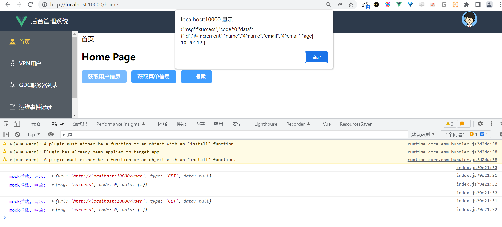获取到的mock数据正常，联调成功。
11. 使用localStorage存储信息¶
1 什么是localStorage¶
对浏览器来说，使用 Web Storage 存储键值对比存储 Cookie 方式更直观，而且容量更大，它包含两种：localStorage 和 sessionStorage
sessionStorage（临时存储） ：为每一个数据源维持一个存储区域，在浏览器打开期间存在，包括页面重新加载
localStorage（长期存储） ：与 sessionStorage 一样，但是浏览器关闭后，数据依然会一直存在
所以上次使用cookie的时候就遇到了一个坑,设置后马上访问session会获取不到,蛋疼,还需要刷新一下,原因是:
当我们首次访问设置Cookie的页面时，服务器会把设置的Cookie值通过响应头发送过来，告诉浏览器将cookie存储的本地相应文件夹中（注意:第一次访问时本地还没有存储Cookie,所以此时获取不到值）;
当第二次访问(或在进行cookie设置后,过期前所有的访问)时，请求头信息你中都会把Cookie值携带。(百度到的,暂时还没理解透彻,先搬过来).
2 使用方法¶
注意:sessionStorage 和 localStorage 的用法基本一致，引用类型的值要转换成JSON,所以这里就只列举localStorage
保存
//对象
const info = { name: 'hou', age: 24, id: '001' };
//字符串
const str="haha";
localStorage.setItem('hou', JSON.stringify(info));
localStorage.setItem('zheng', str);
获取
var data1 = JSON.parse(localStorage.getItem('hou'));
var data2 = localStorage.getItem('zheng');
删除
//删除某个
localStorage.removeItem('hou');
//删除所有
localStorage.clear();
监听
Storage 发生变化（增加、更新、删除）时的 触发，同一个页面发生的改变不会触发，只会监听同一域名下其他页面改变 Storage
window.addEventListener('storage', function (e) {
console.log('key', e.key); console.log('oldValue', e.oldValue);
console.log('newValue', e.newValue); console.log('url', e.url);
})
3 vue中实践¶
根据我的需求来的一个默认记住上次选择的,很简单
添加数据的时候,下次添加默认记住我上次的选择
所以,在添加或者提交的时候存储值即可,
localStorage.setItem('projectId',me.workhourData.projectId+","+me.workhourData.projectManager);
在打开新建页面的时候获取一下就好了,只需要判断非空就行
//记住上次选中的审核人
if(localStorage.length>0){
var mydata = localStorage.getItem('projectId');
if(mydata!=null){
var arr3=mydata.split(",");
if(arr3[0]==me.workhourData.projectId){
me.workhourData.projectManager=arr3[1];
}
}
}
4. 注意点¶
localStorage有效期是永久的。一般的浏览器能存储的是5MB左右。sessionStorage api与localStorage相同。 sessionStorage默认的有效期是浏览器的会话时间（也就是说标签页关闭后就消失了）。 localStorage作用域是协议、主机名、端口。（理论上，不人为的删除，一直存在设备中） sessionStorage作用域是窗口、协议、主机名、端口。
知道了这些知识点后，你的问题就很好解决了。 localStorage是window上的。所以不需要写this.localStorage，vue中如果写this，是指vue实例。会报错
登录中使用localStorage
signin() {
const that = this;
axios
.post('/api/token/', {
username: that.signinName,
password: that.signinPwd,
})
.then(function (response) {
const storage = localStorage;
// Date.parse(...) 返回1970年1月1日UTC以来的毫秒数
// Token 被设置为1分钟，因此这里加上60000毫秒
const expiredTime = Date.parse(response.headers.date) + 60000;
// 设置 localStorage
storage.setItem('access.myblog', response.data.access);
storage.setItem('refresh.myblog', response.data.refresh);
storage.setItem('expiredTime.myblog', expiredTime);
storage.setItem('username.myblog', that.signinName);
// 路由跳转
// 登录成功后回到博客首页
that.$router.push({name: 'Home'});
})
// 读者自行补充错误处理
// .catch(...)
},
登出中使用localStorage
deletelocalStorage (name) {
localStorage.removeItem(name)
},
logout () {
// sessionStorage.removeItem("user")
// this.deleteCookie("token")
this.deletelocalStorage("token")
this.$router.push("/login")
// this.$api.logout().then((res) => {
// console.log(res)
// }).catch(function(res) {
// })
},
12.左侧aside菜单栏样式和路由跳转¶
menu 样式和路由跳转
CommonAside.vue中设置样式：对侧边栏进行样式设置
<el-menu
class="el-menu-vertical-demo"
:default-active="this.$route.path"
router
active-text-color="#ffd04b"
background-color="#545c64"
text-color="#fff"
:unique-opened = "true"
@open="handleOpen"
@close="handleClose"
:collapse="isCollapse"
>
<style lang="less" scoped>
/* logo */
.logo {
vertical-align: middle; /* 居中 */
padding: 0px 10px 0px 20px; /* 上右下左 */
}
/* 文字 */
.company {
position: absolute;
color: white;
}
.el-menu-vertical-demo:not(.el-menu--collapse) {
width: 200px;
min-height: 400px;
}
.el-menu {
height: 100vh;
border: none;
border-right: none;
h3 {
color: white;
text-align: center;
line-height: 48px;
}
}
</style>
路由配置：添加点击事件，进行路由的跳转
<el-menu-item @click="clickMenu(item)" v-for="item in noChildren" :index="item.path" :key="item.path">
<!-- <i :class="'el-icon-' + item.icon"></i> vue2图标方式 -->
<!-- 方式1-->
<!-- <component :is="item.icon" style="width: 16px;height: 16px;"></component>-->
<!-- 方式2-->
<el-icon><component :is="item.icon"/></el-icon>
<template v-slot:title>
<span>{{item.label}}</span>
</template>
</el-menu-item>
clickMenu(item) {
console.log(item)
//调用vuex的selectMenu方法存储数据
this.$store.commit('selectMenu', item)
this.$router.push({name: item.name,});
},
12.1 一级菜单实现¶
在 CommonAside.vue 的 data 中添加数据（用来做动态组件）
【添加数据】
data() {
return {
// isCollapse: false,
logoImg: require('../../../assets/gitee.png'),
menu: [
{
path: "/home",
name: "home",
label: "首页",
icon: "HomeFilled",
url: "/home",
},
{
path: "/vpnuser-list",
name: "VpnList",
label: "VPN用户管理",
icon: "Connection",
url: "/vpnuser-list",
},
{
path: "/server-list",
name: "ServerList",
label: "GDC服务器列表",
icon: "Grid",
url: "/server-list",
},
{
label: "其他",
icon: "Menu",
children: [
{
path: "/softwareImage",
name: 'record',
label: "常用软件镜像站",
icon: "Position",
url: "/softwareImage",
},
{
path: "/record",
name: 'softwareImage',
label: "运维事件记录",
icon: "Edit",
url: "/record",
},
],
},
],
};
},
【渲染组件（分为一级菜单和二级菜单）】
在计算属性 computed 中定义函数
noChildren()，过滤出没有子级的一级菜单
computed: {
noChildren() {
//过滤出来没有子项目的数据
return this.menu.filter((item) => !item.children);
}
}
v-for 遍历过滤出来的一级菜单，并在相应位置做出呈现
<!-- 一级菜单-->
<el-menu-item @click="clickMenu(item)" v-for="item in noChildren" :index="item.path" :key="item.path">
<!-- <i :class="'el-icon-' + item.icon"></i> vue2图标方式 -->
<!-- 方式1-->
<!-- <component :is="item.icon" style="width: 16px;height: 16px;"></component>-->
<!-- 方式2-->
<el-icon><component :is="item.icon"/></el-icon>
<template v-slot:title>
<span>{{item.label}}</span>
</template>
</el-menu-item>
12.2 二级菜单实现¶
在计算属性 computed 中定义函数
hasChildren()，过滤出有子级的菜单
computed: {
hasChildren() {
//过滤出来有子项目的数据
return this.menu.filter((item) => item.children);
}
}
v-for 遍历过滤出来的二级菜单，并在相应位置做出呈现
<!-- 二级菜单-->
<el-sub-menu v-for="item in hasChildren" :index="item.path" :key="item.path">
<template v-slot:title>
<el-icon><component :is="item.icon"/></el-icon>
<span >{{ item.label }}</span>
</template>
<!-- 二级菜单 -->
<el-menu-item-group v-for="subItem in item.children" :key="subItem.path">
<el-menu-item @click="clickMenu(subItem)" :index="subItem.path">
<!-- <component :is="subItem.icon" style="width: 16px; height: 16px;"></component>-->
<el-icon><component :is="subItem.icon"/></el-icon>
{{subItem.label}}
</el-menu-item>
</el-menu-item-group>
</el-sub-menu>
实现效果图如下：
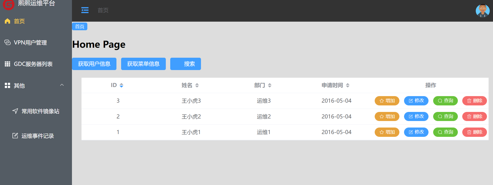13.vuex实现左侧折叠¶
配置和使用 vuex
创建 store 文件夹，在该文件夹下创建 index.js 文件，用来管理 vuex 的相关配置
import { createStore } from 'vuex'
import tab from './tab'
import user from './user'
export default createStore({
state: {
},
getters: {
},
mutations: {
},
actions: {
},
modules:{
tab,
user
}
})
在 store 文件夹下，定义 tab.js 文件
export default {
// 用于存储具体的数据
state: {
// menu是否展开，默认为展开
isCollapse: false,
},
// 用来修改state中的数据
mutations: {
collapseMenu(state){
state.isCollapse = !state.isCollapse //进行取反操作
}
}
}
在 CommonHeader.vue 中添加
handleMenu()方法
<el-button type="text" @click="handleMenu" title="侧边栏折叠/展开"><el-icon :size="25"><fold /></el-icon></el-button>
methods:{
handleMenu() {
this.$store.commit('collapseMenu')
},
}
14. 用户管理界面-表格增删改查¶
index.vue
<template>
<div>首页</div>
<h2>Home Page</h2>
<el-button type="primary" @click="getUser">获取用户信息</el-button>
<el-button type="primary" @click="getMenu">获取菜单信息</el-button>
<el-button type="primary" icon="el-icon-search">搜索</el-button>
<div class="root">
<el-table
:data="tableData"
class="table"
style="width: 100%"
:fit='true'
:default-sort="{prop: 'id', order: 'descending'}"
>
<el-table-column :prop="index" :label="item" sortable show-overflow-tooltip v-for="(item, index) in tableHeader"
:key="index" align="center">
</el-table-column>
<el-table-column label="操作" align="center" width="300">
<template #default="scope">
<el-button size="small" type="warning" icon="Star" round @click="add(scope.$index, scope.row)" >增加</el-button>
<el-button size="small" type="primary" icon="Edit" round @click="edit(scope.$index, scope.row)" >修改</el-button>
<el-button size="small" type="success" icon="Search" round @click="search(scope.$index, scope.row)" >查询</el-button>
<el-button size="small" type="danger" icon="Delete" round @click="del(scope.$index, scope.row)" >删除</el-button>
<!-- <el-button size="small" type="danger" @click="handleDelete(scope.$index, scope.row)">Delete</el-button>-->
<!-- <el-button size="small" type="primary" @click="handleDelete(scope.$index, scope.row)">Delete</el-button>-->
</template>
</el-table-column>
</el-table>
</div>
</template>
<script>
import axios from 'axios'
import Cookies from "js-cookie";
import router from '@/router'
export default {
name: 'index',
components: {},
data() {
return {
tableHeader: {
id: "ID",
username: "姓名",
job: "部门",
date:"申请时间"
},
tableData: []
}
},
methods: {
formatter(row, column) {
return row.address;
},
add (index, row) {
console.log(index, row.username)
},
edit (index, row) {
console.log(index, row.username)
},
search (index, row) {
console.log(index, row.username)
},
del (index, row) {
console.log(index, row.username)
},
// handleDelete (index, row) {
// console.log(index, row.username)
// }
async getData() {
const vpnuserData = await this.$api.vpnuserlist()
this.tableData = vpnuserData.data
},
getUser () {
axios.get('http://localhost:10000/user').then(function (res) {
alert(JSON.stringify(res.data))
}).catch(function (res) {
alert(res)
})
},
getMenu () {
axios.get('http://localhost:10000/menu').then(function (res) {
alert(JSON.stringify(res.data))
}).catch(function (res) {
alert(res)
})
}
},
mounted() {
this.getData()
}
}
</script>
<style scoped>
.root {
margin: 20px 25px 0px 25px;
}
/deep/.el-table .cell{
display: flex;
justify-content: center;
}
</style>
使用element-ui 中表格中操作按钮错位 不在一行显示
参考文献
vue+Element UI table表格动态渲染(包括操作按钮列)、按钮动态绑定点击事件
15. Element-Plus实现全局请求loading¶
Vue3 + Axios + Element-Plus 实现全局的合并请求loading。
使用 Element-Plus的Loading 加载组件实现
https://element-plus.org/zh-CN/component/loading.html
utils/loading.js
/**
* 全局loading效果：合并多次loading请求，避免重复请求
* 当调用一次showLoading，则次数+1；当次数为0时，则显示loading
* 当调用一次hideLoading，则次数-1; 当次数为0时，则结束loading
*/
import { ElLoading } from 'element-plus';
// 定义一个请求次数的变量，用来记录当前页面总共请求的次数
let loadingRequestCount = 0;
// 初始化loading
let loadingInstance;
// 编写一个显示loading的函数 并且记录请求次数 ++
const showLoading = (target) => {
if (loadingRequestCount === 0) {
// element的服务方式 target 我这边取的是表格class
// 类似整个表格loading和在表格配置v-loading一样的效果，这么做是全局实现了，不用每个页面单独去v-loading
loadingInstance = ElLoading.service({
lock: true,
text: '努力加载中...',
background: 'rgba(255,255,255,.4)',
target: document.querySelector('.main')
})
}
loadingRequestCount++
}
// 编写一个隐藏loading的函数，并且记录请求次数 --
const hideLoading = () => {
if (loadingRequestCount <= 0) return
loadingRequestCount--
if (loadingRequestCount === 0) {
loadingInstance.close();
}
}
export {
showLoading,
hideLoading
}
utils/request.js
import axios from 'axios'
import config from './config';
import qs from 'qs';
import Cookies from "js-cookie";
import router from '@/router'
import { ElMessage, ElMessageBox } from 'element-plus'
import { showLoading, hideLoading } from '@/utils/loading'
// 使用vuex做全局loading时使用
import store from '@/store'
export default function $axios(options) {
return new Promise((resolve, reject) => {
const instance = axios.create({
baseURL: config.baseURL,
headers: {},
transformResponse: [function (data) {
}]
})
// request 拦截器
instance.interceptors.request.use(
config => {
// 请求拦截进来调用显示loading效果
showLoading()
// 断网提示
if (!navigator.onLine) {
ElMessageBox.alert(
'您的网络故障，请检查!',
'温馨提示',
{
confirmButtonText: '好的',
type: 'warning'
}
)
}
let token = Cookies.get('token')
// 1. 请求开始的时候可以结合 vuex 开启全屏 loading 动画
// console.log(store.state.loading)
// console.log('准备发送请求...')
// 2. 带上token
if (token) {
config.headers.accessToken = token
} else {
// 重定向到登录页面
router.push('/login')
}
// 3. 根据请求方法，序列化传来的参数，根据后端需求是否序列化
if (config.method === 'post') {
if (config.data.__proto__ === FormData.prototype
|| config.url.endsWith('path')
|| config.url.endsWith('mark')
|| config.url.endsWith('patchs')
) {
} else {
config.data = qs.stringify(config.data)
}
}
return config
},
error => {
// 请求错误时
console.log('request:', error)
// 1. 判断请求超时
if (error.code === 'ECONNABORTED' && error.message.indexOf('timeout') !== -1) {
console.log('timeout请求超时')
// return service.request(originalRequest);// 再重复请求一次
}
// 2. 需要重定向到错误页面
const errorInfo = error.response
console.log(errorInfo)
if (errorInfo) {
error = errorInfo.data // 页面那边catch的时候就能拿到详细的错误信息,看最下边的Promise.reject
const errorStatus = errorInfo.status; // 404 403 500 ...
router.push({
path: `/error/${errorStatus}`
})
}
return Promise.reject(error) // 在调用的那边可以拿到(catch)你想返回的错误信息
}
)
// response 拦截器
instance.interceptors.response.use(
response => {
// 响应拦截进来隐藏loading效果，此处采用延时处理是合并loading请求效果，避免多次请求loading关闭又开启
setTimeout(() => {
hideLoading()
}, 200)
let data;
// IE9时response.data是undefined，因此需要使用response.request.responseText(Stringify后的字符串)
if (response.data == undefined) {
data = JSON.parse(response.request.responseText)
} else {
data = response.data
}
// 根据返回的code值来做不同的处理
switch (data.rc) {
case 1:
console.log(data.desc)
break;
case 0:
store.commit('changeState')
// console.log('登录成功')
default:
}
// 若不是正确的返回code，且已经登录，就抛出错误
// const err = new Error(data.desc)
// err.data = data
// err.response = response
// throw err
return data
},
err => {
// 响应拦截进来隐藏loading效果，此处采用延时处理是合并loading请求效果，避免多次请求loading关闭又开启
setTimeout(() => {
hideLoading()
}, 200)
console.log('http response - err', error)
ElMessage({
message: '服务器异常，请稍后再试',
type: 'error',
duration: 5 * 1000
})
if (err && err.response) {
switch (err.response.status) {
case 400:
err.message = '请求错误'
break
case 401:
err.message = '未授权，请登录'
break
case 403:
err.message = '拒绝访问'
break
case 404:
err.message = `请求地址出错: ${err.response.config.url}`
break
case 408:
err.message = '请求超时'
break
case 500:
err.message = '服务器内部错误'
break
case 501:
err.message = '服务未实现'
break
case 502:
err.message = '网关错误'
break
case 503:
err.message = '服务不可用'
break
case 504:
err.message = '网关超时'
break
case 505:
err.message = 'HTTP版本不受支持'
break
default:
}
}
console.error(err)
return Promise.reject(err) // 返回接口返回的错误信息
}
)
// 请求处理
instance(options).then(res => {
resolve(res)
return false
}).catch(error => {
reject(error)
})
})
}
实现效果如下：
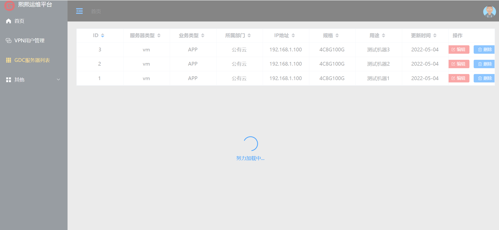参考文献
16. 面包屑 + Tag标签切换功能¶
参考文献
https://www.cnblogs.com/qdhxhz/p/12590324.html
实现效果如下：
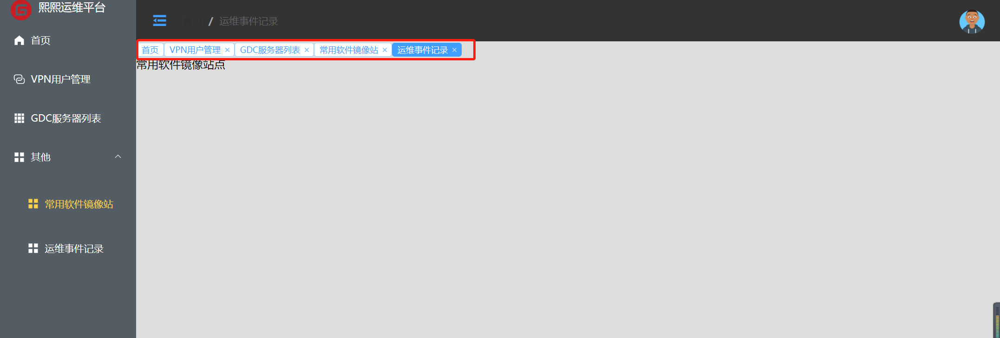17.DateTimePicker设置当前日期之前的时间禁止选择¶
test.vuie
<div>
<el-date-picker
v-model="value1"
type="date"
:disabled-date="disabledDate"
placeholder="选择日期"
value-format="yyyy-MM-dd">
</el-date-picker>
</div>
methods: {
disabledDate(time) {
return time.getTime() < Date.now() - 8.64e7;
}
}
参考文献
18.ElementUI 分页¶
参考文献
19. vue3使用pinia管理状态¶
vue3使用pinia管理状态
https://www.cnblogs.com/zhaord/p/16187429.html
pinia-vue3教程
https://zhushenxiu.site/2022/08/10/vue/pinia/
pinia中文官网
附1-vue3后台管理系统（模板）¶
附2-vue3-element-admin 后台管理系统模板¶
https://blog.csdn.net/Hua929323125/article/details/115249327